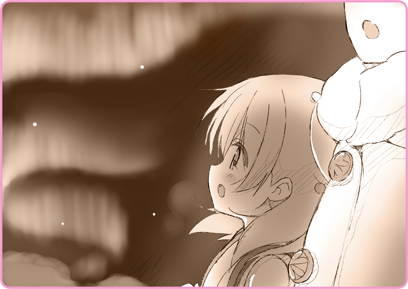

プリマドール・アンコール
03-08 冬の花火（８）
鬱蒼とした森の中。
先に怖気づいたのは灰桜だった。
というか、早い。まだ数十分も歩いていないはずだ。
「人形なのに、おばけでも信じているの？」
背後でなにやら、どさどさと物音がする。
慌ててそちらを懐中電灯で照らした。市場で投げ売りされていた、皇軍の放出品だ。
「……雪が落ちてきただけみたいね」
頼りない白色の灯りが、うっすらと森の中を照らしている。木々から落ちた雪が、小さな山を作っていた。
思わずへたり込みそうになっている。
「私のお供をしてくれるんじゃなかったの？」
慌てて背筋を伸ばして、自分に言い聞かせるように声を上げている。
手を引いて、ずんずんと進んでいく。
それもしばらくの間だけで、気づけばリリアの隣にぴったり寄り添うようにしていた。
「ふふっ……灰桜」
「歌でもうたいましょうか？」
「静かだから怖いのよ。歌うと元気が出るわ」
「ら～～～らら～～～……♪」
雪を踏みしめる音に合わせるように、伸びやかなソプラノを響かせる。
「ほら、灰桜も一緒に」
白い息と共に、森の中に歌声を溶け込ませていく。
不思議なもので、そうやって歌っているとすこしずつ気分が昂ぶってくる。
ある意味、リリアの中でなにかが吹っ切れたのかもしれない。
そのまま灰桜と手をつないで、ダンスのひとつも踊りたい気分だった。
「今日はとことん歌いましょ……♪」
灰桜もさっきまでの怯えようはどこへやら、リリアに続いて心地よさそうに歌っている。
なんだかどこまでも……楽園まで一緒に辿り着けそうな、そんな気がしていた。
＊ ＊ ＊
「……雪、止んだわね」
あれから何曲一緒に歌っただろう。
劇団で覚えたあらゆるレパートリーを披露したような気がする。
灰桜も、ずっとリリアの後に続いて歌って、分からない部分は何度も復唱して、時には歌を中断してレッスンして……
気づけば森の切れ目。白銀の世界を進んでいく。
「この懐中電灯も、もうダメね」
軍用といえど、流石に持たなかったようで、なんの輝きもない。
「あははは、本当ね。お月様なら電池切れしないわね」
「それは待ち遠しいわ……あ、つぅっ……」
不意に膝をついてしまう。
「へ、平気……軽く吊っただけだから」
雪に足を取られまいと、気を取られすぎていたのかもしれない。
ふくらはぎの筋肉が引きつって、悲鳴を上げていた。
「そうね、それもあるかも……歩き通しだったもの」
「賛成よ。灰桜も燃料を……」
近くにある岩場に身を寄せる。
街中でそうしていたように、二人してストールをすっぽりかぶり、灰桜の温もりを分けてもらう。
「私はいいわ。あまりお腹が空いていないの」
カバンにはライ麦パンの固まりが入っているが、なんだか口をつける気になれなかった。
「灰桜、あなたはしっかり食べておいて」
まるでホットミルクでも飲むように、瓶を両手で抱えて燃料補給している。中身はひまわり油だけど。
「ふふっ……おいしそうね」
「ありがとう灰桜」
こん、と頭をくっつける。
彼女の桜色の髪は柔らかく、さらさらと頬をくすぐった
「一緒にいてくれて」
「ねえ、ひとつ聞いていい？」
「前に花火を見たいって言ってたわよね。冬の花火……」
「いまも……そう思ってる？」
「どうしてよ」
「そうね、離れ離れになっちゃうわね」
「そうね、いつか……」
それは十年後だろうか、それとも二十年後……いや、戦争は三十年間続いているのだから、それ以上かもしれない。
「なに、言ってるの」
「いま見られるわ、冬の花火」
空にちらりと、輝きが瞬いた。
「ほら……見上げて」

瑠璃色の丸い目を向けて、感嘆の声を上げた。
寒々しい夜空。青色から緑色に美しいグラデーションを描きながら、幻想的な輝きを形どっていた。
「本当はね、オーロラっていうの」
「こんな寒い日にね、レバルジャクでは見えることがあるの。オーロラは幸運の象徴よ……新年の空に輝くと、素晴らしい豊穣の年になると言われているわ。でも、いつ出るかなんて予想できないでしょ……？ だから、代わりに花火を打ち上げるの」
「ええ、そうよ。前に歌った歌もね……このオーロラのことを意味しているの」
「いっぱい歌ったけど、冬の花火だけはまだだったわね……いいわ、歌いましょ？」
オーロラを見上げながら、一緒に声を弾ませる。
実のところ、リリアの喉はひどくかすれていたが、それでも無理矢理に歌を響かせた。
疲労がどっと押し寄せてくるのが分かる。
腰から下はまるで鉛のようで、寒さも相まってまるで感覚が無い。指先も同じだ。もう寒いという感覚はなく、自分の体が自分のものではなくなってしまったみたいだ。
睫毛が凍りついているのが分かる。つい意識が飛びそうになって、灰桜が不思議そうな声を上げる。慌ててかぶりを振って、なんとか歌をつないだ。
そして、リリアは最後まで歌いきった。
「灰桜、ごめんね」
「最後まで……嘘つきで」
「ローベリアになんか行けないわ」
「分かるの、そんなの無理だって……不可能だって……」
歌をうたったのもわざと、この場所で休んだのもわざとだ。
「オーロラが見えそうという理由だけじゃないの……ほら、見て」
ゆっくりと近づいてくる姿がある。
いかにも心細い懐中電灯の灯りが、辺りを照らしている。リリアが持っていたものとおそらく同型。払い下げられる前の軍需品だ。人影の背後には、ひときわ大きな異形の姿。背中の煙突からとめどなく水蒸気を吹き出している。
「皇軍よ」
執筆：丘野塔也 挿絵：まろやか ＣＶ：和氣あず未（灰桜）
©VISUAL ARTS / Key
Bản dịch tiếng Việt thực hiện bởi Vietnam Key FanClub